Features
Settings
Port change
Support Socks5 and Http port change.
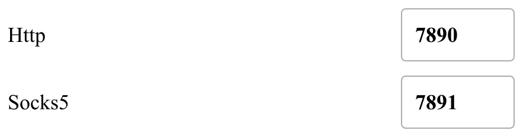
Proxy mode change
Support change proxy mode to Global,Rule or Direct.
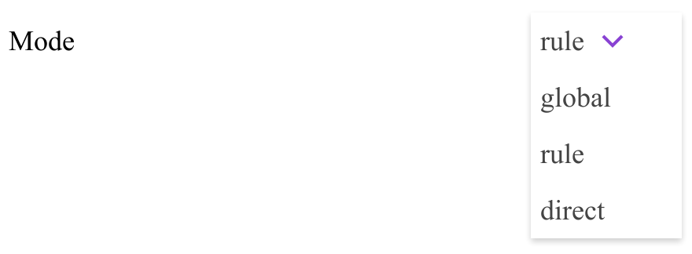
Proxies
Proxy nodes latencies status
Latency status are divided into four levels:
0-200ms, 200-500ms, 500+ms, timeout
Corresponding to these colors respectively:
The length of the status bar indicates the percentage of the number of corresponding status nodes to the total number of nodes.
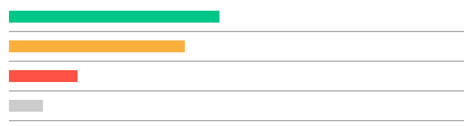
Proxy nodes details
Expand the panel to view the details of the proxy nodes.
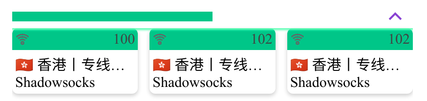
Policies management
Select a policy group to view details.
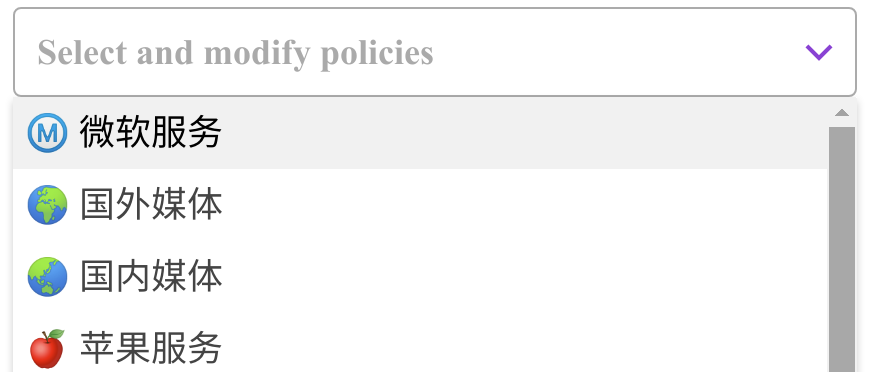
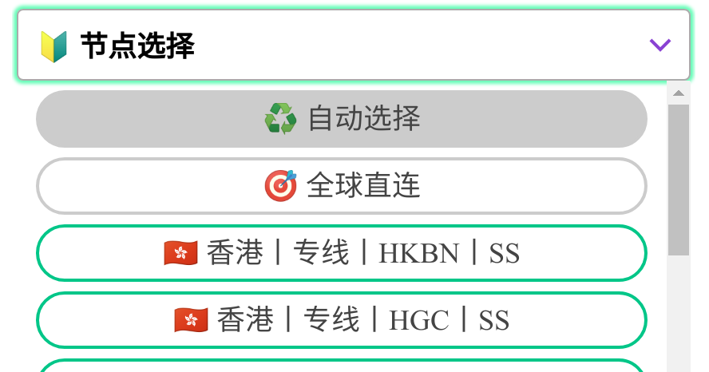
Proxy nodes are arranged in order of latency.
Background highlighted proxy node indicates the one now using, click another to change.
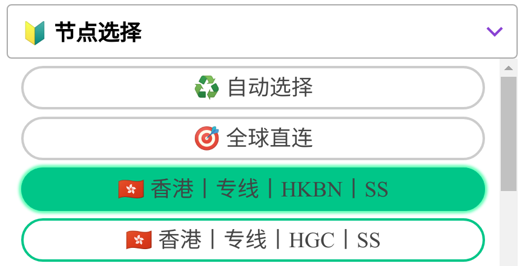
Profiles
Download from subscription link
Enter the subscription link address to download the profile.
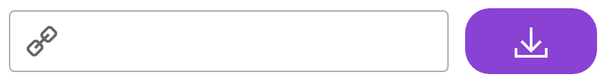
Select a profile
The profiles are displayed as cards as follows:
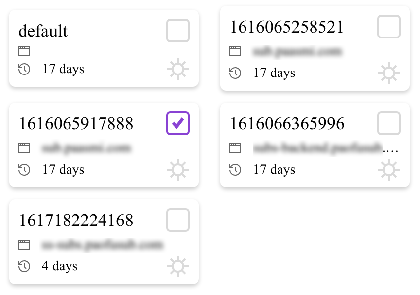
Click on the checkbox to choose a profile for clash to use.
Logs
Clash logs are shown in this panel.
Log level
Clash has four log levels: info, warning, error, debug.
Select a log level to view different level logs.
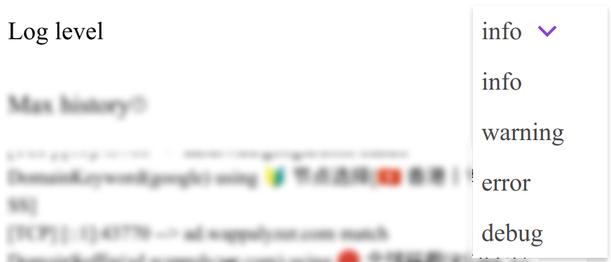
Max history
Max history limits the max count of logs, set to 200 as default. The range is between 100-2000
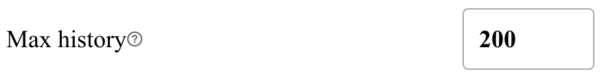
Log details
Logs are printed here.
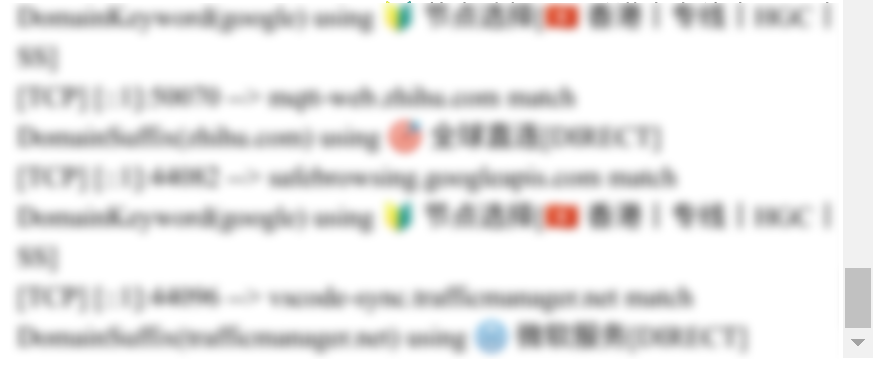
Connections
Clash connections information panel.
Sort connections
Connections information are not sorted by default. Choose a sort type to sort connection information.
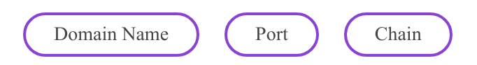
Click this icon to switch ascending and descending order
Filter connections
When sorting is enabled, input filter text to match corresponding connections.
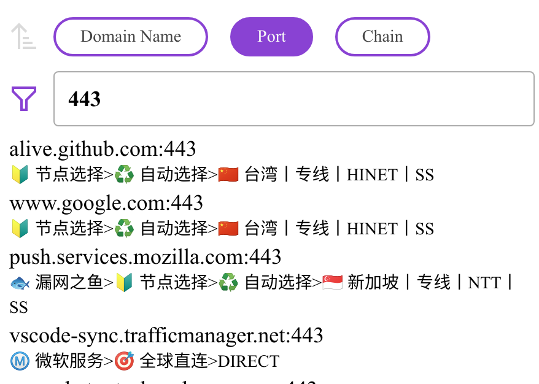
Status bar
Network activity
Realtime network activity is displayed here.
About & Repository
Information of this app and repository address.